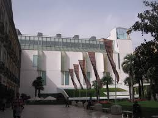
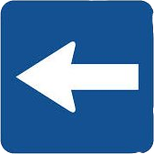

Localización del Museo Reina Sofia
Localización:
MUSEO THYSSEN-BORNEMISZA
Paseo Del Prado, 8
Tel. +34 902 760 511
mtb@museothyssen.org

Transportes:
Metro: Banco de España (L2), Antón Martín (L1)
Autobuses: 10, 14, 27, 34, 37, 45, N9 a N15 y N17
Trenes: Atocha, Recoletos
Volver a la página principal
